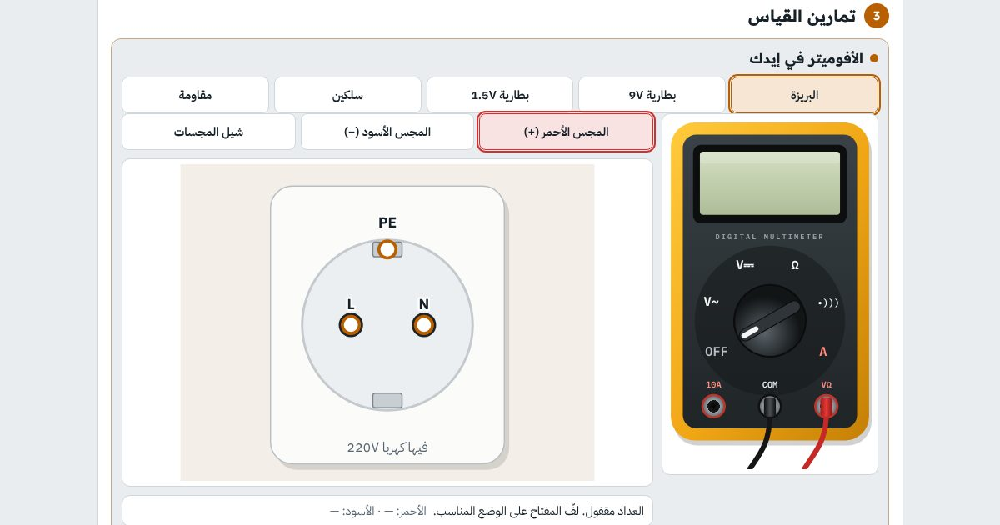

كورس · للمبتدئين تمامًابالعربية
كورس أساسيات الكهرباء للمبتدئين
من «ما معنى الفولت؟» إلى أن تمسك الأفوميتر وتوصّل مصباحًا ومقبسًا وتبحث عن العطل وحدك.
الكورس كله مفتوح للجميع

المحتوى
الدروس
بالترتيب، وفي كل درس شرح مبسّط وتجارب بيدك وأسئلة.
- ما الكهرباء؟مفتوح للجميعماذا تفعل الكهرباء، داخل الذرة، معنى التيار، ومن أين تأتي الكهرباء
- ماذا تفعل الكهرباء؟
- داخل السلك: ذرات
- التيار = إلكترونات تسير
- محاكيتجربة: الإلكترونات داخل السلك
- من أين تأتي الكهرباء؟
- انتبه
- أسئلةأسئلة الدرس
- الجهد والتيارالجهد يدفع والتيار يسير: الدائرة المغلقة، اتجاه التيار، وكيف تقيسهما
- الجهد = الدفع
- التيار = الكهرباء وهي تسير
- دائرة مغلقة ودائرة مفتوحة
- محاكيجرّب: زِد جهد البطارية وافتح المفتاح وأغلقه
- أرقام من الواقع
- كيف تقيس
- أسئلةأسئلة الدرس
- التوصيلية والمواد الموصلة والعازلةالنحاس والألومنيوم والبلاستيك والماء: أيها يوصّل وأيها يعزل، وكيف يؤثر طول السلك وسُمكه
- موصل أم عازل؟
- ما المواد التي ستقابلها في العمل؟
- الماء وجسمك
- جرّب: اختبار المواد
- تمريناختبار المواد
- مقاومة السلك
- تمرينحاسبة مقاومة السلك وهبوط الجهد
- الحرارة ترفع المقاومة
- نحاس أم ألومنيوم؟
- الجهد والتيار والمقاومة معًا
- محاكيتجربة قانون أوم
- أسئلةأسئلة الدرس
- التوصيل على التوالي والتوازيمصابيح على التوالي وعلى التوازي: التيار والجهد في كل مصباح، ولماذا المنزل كله توازٍ، والبطاريات
- التوالي: مسار واحد
- التوازي: لكل جهاز مساره
- جرّب: توالٍ وتوازٍ ومختلط
- تمرينمصابيح على التوالي والتوازي
- البطاريات
- دائرة مختلطة في 4 خطوات
- تمرين: احسب المقاومة الكلية
- أسئلةأسئلة الدرس
- القدرة والطاقةالوات والكيلووات والحصان، الكيلووات ساعة وفاتورة المنزل، الحرارة في السلك، والكفاءة
- القدرة = سرعة استهلاك الطاقة
- احسب أي قيمة من قيمتين
- تمرينحاسبة P و V و I و R
- وات وكيلووات وحصان
- الطاقة = القدرة × الزمن
- تمرينحاسبة أجهزة المنزل والفاتورة
- لماذا يسخن السلك؟
- الكفاءة
- أسئلةأسئلة الدرس
- أنواع الكهرباءالمستمرة والمترددة، أحادي الفاز وثلاثي الفاز، وألوان الأسلاك والأرضي
- DC و AC
- شكل الموجة
- تمرينشكل الكهرباء على الشاشة
- أحادي الفاز وثلاثي الفاز
- ألوان الأسلاك (IEC)
- تمريناعرف السلك من لونه
- الأرضي = مسار أمان
- أسئلةأسئلة الدرس
- السلامة والعُدّةمفك الاختبار، قاطع التسريب، والعُدّة التي يجب أن تكون معك
- 4 خطوات قبل أي عمل
- مفك الاختبار
- محاكيجرّب: المس المقبس بمفك الاختبار
- القاطع وقاطع التسريب
- محاكيجرّب: قاطع التسريب
- العُدّة الأساسية
- أفعل أم لا أفعل؟
- أسئلةأسئلة الدرس
- الأفوميتر (AVO)تقيس الجهد والمقاومة والتوصيل والتيار دون أن تُصاب أو تُتلف الجهاز
- أوضاع الأفوميتر
- كيف تستخدمه هنا
- تمارين القياس
- تمرينالأفوميتر في يدك
- اقرأ الرقم
- أسئلةأسئلة الدرس
- قياس الأجهزة عمليًّاالسخان والغلاية والمصباح والفيوز والمحرك، وقياس التيار بالكلامب ميتر
- قبل القياس
- قِس الأجهزة
- تمرينالورشة
- المحرك
- الكلامب ميتر
- تمرينالكلامب ميتر
- أسئلةأسئلة الدرس
- المحوّل ومصدر التغذيةكيف يخفض المحوّل الجهد، وكيف يحوّل مصدر التغذية الكهرباء المترددة إلى مستمرة، وكيف تقيسهما
- المحوّل
- جرّب: غيّر اللفّات
- محاكيمحاكي المحوّل
- VA والتيار
- قِس المحوّل
- تمرينقِس المحوّل
- مصدر التغذية: AC ⇐ DC
- تمرينمراحل مصدر التغذية
- أعطال مصدر التغذية
- تمرينقِس مصدر التغذية
- أسئلةأسئلة الدرس
- قانون أوم والقدرة واختيار السلك والقاطعتحسب التيار من القدرة، وتختار القاطع ومقاس السلك الصحيحين
- معادلتان فقط
- الحاسبة
- مثال: سخان 3000W
- الجدول المعتاد
- تمرين: اختر القاطع والسلك
- أسئلةأسئلة الدرس
- توصيل المصباح والمقبسوصّل بيدك: مصباح بمفتاح، مقبس بأرضي، مفتاح سلّم، ومصباحان على التوازي
- قبل التوصيل
- مفتاح السلّم والتوازي
- لوحة التوصيل
- محاكيوصّل بيدك
- أسئلةأسئلة الدرس
- أعطال المنزل الشائعةلعبة تبحث فيها عن العطل بمفك الاختبار والأفوميتر، ثم الامتحان النهائي
- طريقة التفكير
- اللعبة: ابحث عن العطل
- تمرينعمل في المنزل
- أسئلةأسئلة الدرس
- امتحانالامتحان النهائي للكورس
الكورس بالأرقام
13درسًا بالترتيب، وكل درس مبني على ما قبله
+50تجربة وتمرين وسؤال تُصحَّح تلقائيًّا
1امتحان نهائي وشهادة إتمام برمز تحقق
0خبرة سابقة مطلوبة قبل البدء
أساسيات الكهرباء
ماذا ستتعلّم
- تفهم الجهد والتيار والمقاومة والقدرة بتشبيهات سهلة
- تفرّق بين التوالي والتوازي، وتعرف لماذا يوصَّل المنزل كله على التوازي
- تحسب استهلاك الأجهزة وفاتورة الكهرباء بالكيلووات ساعة
- تعرف الفرق بين AC و DC، وأحادي الفاز وثلاثي الفاز، وألوان الأسلاك
- تستخدم الأفوميتر استخدامًا صحيحًا: جهد ومقاومة وتوصيل وتيار، دون أن تتلفه
- تقيس السخان والمحرك والفيوز والمحوّل وتعرف السليم من التالف
- تختار مقاس السلك والقاطع المناسبين للحمل
- توصّل مصباحًا بمفتاح ومقبسًا بأرضي ومفتاح سلّم، وتبحث عن أعطال المنزل
لمن
لمن هذا الكورس
- لمن هو جديد تمامًا على الكهرباء ولا يعرف من أين يبدأ
- لطلاب الدبلومات والمعاهد الفنية والسنة الأولى في الهندسة
- لمن يريد إصلاح أعطال منزله بنفسه وبأمان
- قبل دخول كورس الكلاسيك كنترول أو كورس أجهزة القياس
أسئلة متكررة
قبل أن تسأل
هل أحتاج إلى معرفة سابقة قبل الكورس؟
لا. الكورس يبدأ من الصفر، ويشرح كل مصطلح بتشبيهات من الحياة اليومية قبل أي أرقام.
هل أحتاج إلى أفوميتر أو عُدّة لأتعلّم؟
لا يلزم. الأفوميتر واللوحات والأجهزة كلها تفاعلية داخل الصفحة. وإذا كان لديك أفوميتر حقيقي فجرّب عليه الخطوات نفسها بعد أن تنتهي.
هل توجد شهادة؟
نعم. حين تُنهي كل الدروس والامتحان النهائي وأنت مسجّل الدخول بحسابك، تحصل على شهادة إتمام عليها اسمك ورمز تحقق و QR يتأكّد منه أي شخص.
هل الكورس مفتوح؟
نعم، الكورس كله مفتوح للجميع. سجّل الدخول بحسابك ليُحفظ تقدّمك.
هل أستطيع الدراسة من الهاتف؟
نعم. الكورس يعمل على الهاتف والتابلت والحاسوب، وتقدّمك يُحفظ في حسابك وينتقل معك إلى أي جهاز.
مستعد لبدء أساسيات الكهرباء؟
الكورس كله مفتوح. ابدأ الآن وتابع بالسرعة التي تناسبك، وتقدّمك يُحفظ في حسابك.